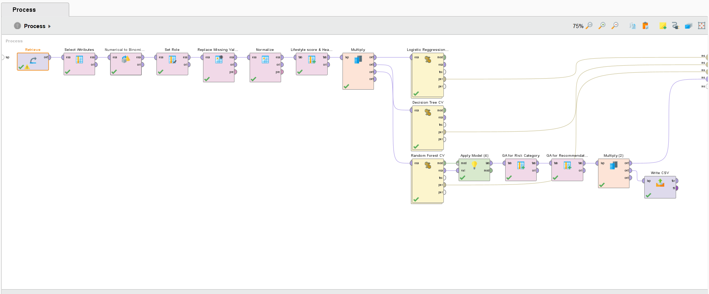
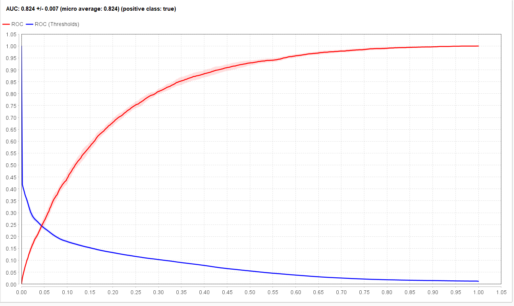
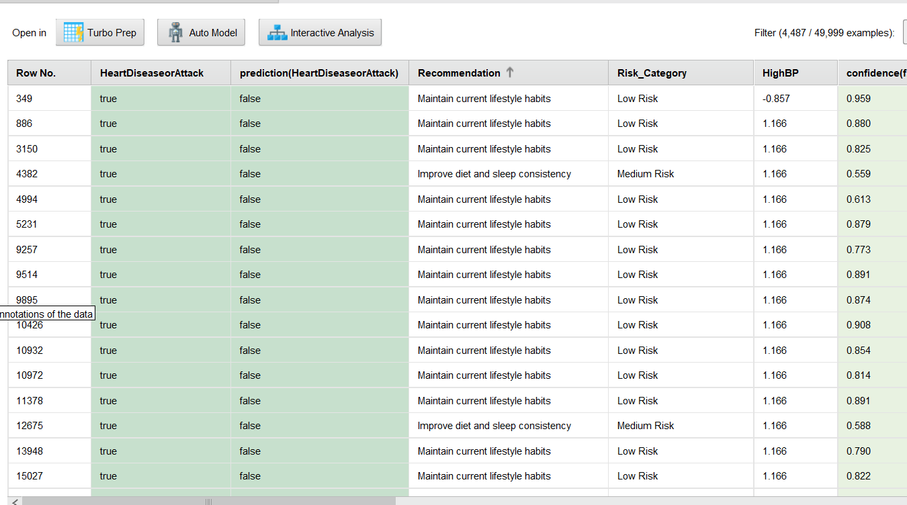

AI-Powered Preventive
Heart Disease Risk Detection
Using CDC behavioral survey data and machine learning for early risk prediction — before symptoms appear.
Healthcare is reactive, not preventive
Heart disease is the #1 cause of death globally. Symptoms typically appear only after serious damage is already done, and the current system waits for patients to get sick before acting. The goal here: detect risk before symptoms appear, using behavioral data already being collected.
RapidMiner pipeline
Built and trained entirely in RapidMiner Studio 12.1, on the CDC BRFSS dataset (via Kaggle) — real survey data from 50,000 Americans, not synthetic.
- 01
Read & clean data
Retrieve → select 19 attributes → average imputation for missing values.
- 02
Normalize features
Z-transformation across all numeric features · set
HeartDiseaseorAttackas the label. - 03
Feature engineering
Generated two composite features — Lifestyle Score and Health Burden Index (details below).
- 04
Train 3 models
10-fold cross-validation across Logistic Regression, Decision Tree (depth 5), and Random Forest (100 trees, depth 10).

Two engineered features
Lifestyle Score
(PhysActivity × 2) + Fruits + Veggies − Smoker − HvyAlcoholConsump
Health Burden Index
HighBP + HighChol + Diabetes + (GenHlth − 1) + DiffWalk
Models trained and compared
Random Forest was selected for deployment — highest AUC (0.824) indicates the best risk discrimination, even though Decision Tree edged it slightly on raw accuracy.
| Model | Accuracy | AUC | Notes |
|---|---|---|---|
| Logistic Regression | 84.88% | 0.834 | 10-fold CV |
| Decision Tree | 90.97% | 0.569 | Depth 5 |
| Random Forest ★ Selected | 90.98% | 0.824 | 100 trees, depth 10, 10-fold CV |
The Random Forest model correctly classified 9 out of 10 patients, with an AUC of 0.824 demonstrating strong ability to distinguish risk vs. no-risk cases.

Risk tiers & recommendations
Each patient in the output CSV receives a risk score, a tier, and a personalized recommendation for clinical follow-up.
Low Risk
Moderate Risk
High Risk
Critical Risk
Quarterly checkup, medication review, diet plan

Read the complete writeup
Full report embedded below. If it doesn't load, use the button to open it directly in Google Drive.
Conclusion & next steps
Trained 3 ML models on 50,000 CDC survey records, achieved 90.98% accuracy with Random Forest, and exported an actionable output with risk tiers and personalized recommendations for clinical use.
Next: validate on external datasets, deploy as an API for EHR integration, build a patient-facing web interface, and run a clinical pilot study.